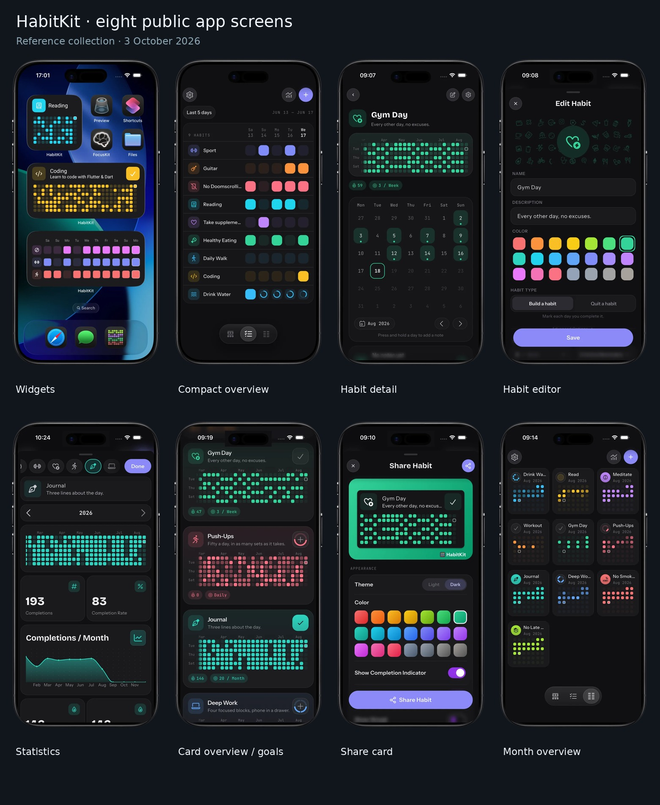

Organized app research pack
HabitKit → iOS build reference
Prepared 3 October 2026. A complete public-website visual collection, a 53-entry feature inventory and an original iOS implementation proposal.
Start with the feature report and screen gallery. The implementation plan then turns the findings into modules, data models, build stages and 35 acceptance scenarios. Exact in-app behavior still needs verification on an iPhone.
Feature research
Functional inventory, free/Pro gates, source conflicts and current limits.
Open the report →Screen gallery
Eight main screens plus help screenshots, diagrams and widget examples.
Browse the pictures →iOS build plan
SwiftUI architecture, local data, widgets, Shortcuts, recovery and release checks.
Read the build plan →Eight primary app screens

Folder contents
| Folder | Contains |
|---|
| 01_research | Feature report, screenshot gallery and JSON feature/screen inventories. |
| 02_app_screenshots | 31 original app/help visuals plus one derived contact sheet. |
| 03_website_screenshots | Two browser captures: hero and complete homepage. |
| 04_sources | Source and asset provenance, URLs, dimensions, sizes and hashes. |
| 05_other_assets | 14 original icons, logos, badges, QR codes and editorial thumbnails. |
| 06_ios_plan | Architecture, original data model, roadmap and acceptance checks. |
Source index · Readme · Homepage capture